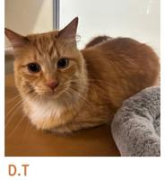

0

"Another breach at Tata has leaked details about Apple's iPhone 18, along with documents belonging to several other Tata clients," writes Longtime Slashdot reader Ritz_Just_Ritz. "It's becoming a recurring theme for the company." Reuters reports: Reuters has previously reported the Tata Electronics leak of more than 200,000 files on the dark web by World Leaks had files with purported component design papers of older iPhones and some parts of Tesla -- both Tata clients. They also included documents of Taiwan Semiconductor Manufacturing Co and Qualcomm, both of which make parts used in iPhones. New documents reviewed by Reuters show there are at least six files that map many components in the iPhone 18 Pro models to the specific company that supplies them. These include details of chips on its main circuit board and parts of the battery and cameras.
Apple considers this detail sensitive and is concerned about the documents being shared on the dark web as they relate to unreleased models, according to the person familiar with the matter. The data maps suppliers to iPhone parts, which Apple does not disclose in its public database of suppliers, the person added. In all, the documents detail hundreds of parts to be on the upcoming iPhone 18 Pro models. The records also show where Apple draws a part from several suppliers and where it relies on just a few, laying bare both its bargaining leverage and its vulnerabilities. More broadly, the leak threatens Apple's trust in Tata just as Tata is becoming central to its effort to shift iPhone production away from China. With India expected to produce roughly a quarter of the world's iPhones in 2026, any deterioration in that relationship could complicate Apple's diversification strategy and force tighter security controls across its suppliers.
Read more of this story at Slashdot.
Microsoft has released a public preview of Windows Subsystem for Linux (WSL) containers, adding a built-in command-line tool and API for running Linux containers directly inside Windows applications without third-party software. The update also introduces faster file access, improved networking and memory management, plus integration with Defender, Intune, and VS Code. The Register reports: WSL has always been a handy way to run Linux workloads from Windows, and is particularly convenient for Linux developers who must comply with corporate edicts to use a Windows device. The CLI for end-to-end container workflows furthers this. Microsoft stated, "WSL containers make it easier for developers and organizations to build, test, and run containerized workloads while benefiting from the security, manageability, and integration of the Windows platform."
Alternatively, you could run your preferred Linux distribution natively, but that might not be an option, particularly if an organization is keen on the "security, manageability, and integration of the Windows platform." And this is an important point. WSL's existing Microsoft Defender for Endpoint (MDE) has been updated (in private preview) to be aware of Linux container events, and there are settings in Intune for managing WSL containers. Support is also in a pre-release version of VS Code, where the Docker path in the dev container settings can be changed to wslc.
There is also a new default file system for WSL container that Microsoft claims makes Windows file access twice the speed. So, going from terribly slow to just slow? We'll wait until general availability is reached before passing judgment. There's a new default networking mode to improve compatibility and better memory reclaim techniques. However, none of these tweaks will be enabled by default in WSL. Microsoft wrote, "Since these changes touch mission critical paths like file system access and network, for now they are enabled just in WSL container."
Read more of this story at Slashdot.
An anonymous reader quotes a report from Ars Technica: South Korea's government and top tech companies are committing $1 trillion to several flagship megaprojects that could bolster global memory chip supply, build new AI data centers and spur commercial deployment of humanoid robots by 2028. [...] "We must secure the core elements of AI faster than any other country," said South Korean President Lee Jae Myung in a televised speech on June 29, as reported by BBC News and other media outlets. "Semiconductors, physical AI, and AI data centers are the triple axis for a great leap forward." [...]
The most costly of the megaprojects involves Samsung and SK Hynix committing $585 billion to building new chip fabrication plants in the southwest provinces of South Korea, along with boosting semiconductor fab construction in the Seoul capital region, according to Reuters. The government's goal is to double South Korea's production of dynamic random-access memory (DRAM) within five years. [...] The second flagship megaproject involves a $357 billion investment by the South Korean tech companies SK Group, GS Group, and Naver into building large-scale AI data centers in more outlying provinces, including South Chungcheong Province in the west, Gangwon Province in the east, and the North and South Jeolla Provinces in the southwest corner of South Korea.
The third flagship megaproject revolves around the South Korean government assigning a "national strategic industry" designation to physical AI -- the AI systems that enable robots and self-driving vehicles to interact more autonomously with the real world. The government aims to develop a Korean "general-purpose foundation model" based on a world model to support robots within three years, according to The Chosun Daily. Hyundai Motor Company has also committed $5.8 billion to build a robot manufacturing facility and AI data center in the Saemangeum region of North Jeolla Province in the southwest, The Chosun Daily reported.
The South Korean automaker has already been helping Boston Dynamics -- the US robotics company it acquired in 2021 -- use the South Korean supply chain in scaling up manufacturing to produce 30,000 Atlas humanoid robots each year by 2028. Similarly, the South Korean government announced it would aim to commercialize humanoid robots in 10 major industries by 2028, along with training 10,000 human workers as "AI robotics specialists" over the next five years, Reuters reported.
Read more of this story at Slashdot.
Slashdot reader joshuark summarizes this walk down memory lane from the tech site MakeUseOf:
Facing real competition from Digital Research's DR DOS, Microsoft secretly embedded a sabotaging mechanism known as "AARD code" into beta versions of Windows 3.1 to prevent it from running on Digital Research's competing DR DOS operating system.This code triggered fake, alarming error messages to convince developers that DR DOS was unstable... Although Microsoft disabled the feature in the final retail release, the California-based firm Caldera, Inc., which had acquired DR DOS assets, sued Microsoft for anti-competitive practices.Microsoft settled the lawsuit out of court in 2000 for $280 million, a figure that remained sealed until it was unsealed in 2009.
Read more of this story at Slashdot.
"Amid growing public anger over A.I. and a debate over how to regulate it, a group of employers, state governors and foundations has raised $500 million to try to answer some of those questions themselves," reports the New York Times.
"Just how many jobs will AI upend?" asks the Wall Street Journal, reporting that the new coalition says it's time to ready the U.S. workforce for a "major" disruption — no matter how large it turns out to be. The coalition "has so far raised more than $500 million — about half of its multiyear goal — from companies and nonprofit groups. It will initially work with state governments in Arkansas, Maryland, Utah and Connecticut. OpenAI and Anthropic are also involved, and academics including MIT economist David Autor sit on an advisory board."
[The new "RAISE US" coalition] will be led by former Commerce Secretary Gina Raimondo, who served under former President Joe Biden, and former Indiana Gov. Eric Holcomb, a Republican. Its mandate, they said, isn't just to build retraining programs but also to reconsider decades-old policies such as unemployment insurance and act as a working lab for testing the most effective ways to transition workers to new fields. The group will explore corporate incentives for employers to hold on to workers whose jobs are disrupted by AI and prep them for new roles... The mission of the group is to "pull all the levers at once," Raimondo said. That means teaming up with employers to find ways to help workers gain skills or new roles and joining with educators to roll out different types of training. It also plans to propose policy changes such as tweaking unemployment benefits to let displaced workers continue to get them while they, for instance, start new businesses with AI... In Maryland, the group plans to expand a service-year option in the state to help people gain exposure to such growing fields as healthcare. An effort in Arkansas will focus on supporting "an AI-powered career navigation platform."
More from New York Times:
The organization will work primarily with governors... The theory: States generally control their community college systems, which can translate work force policy through course offerings and industry partnerships. The bulk of the budget will fund pilot programs overseen by about 15 staff members and consultants. For example, Maryland will expand a "service year" for recent high school graduates to provide experience in fields where there are shortages, such as health care. In other states, Raise Us hopes to offer "wage insurance" for workers who take lower-paying jobs rather than dropping out of the work force entirely.
The group plans to furnish technical assistance for companies that want to retain workers as A.I. changes their roles, rather than eliminating them. Microsoft, one of the companies backing the organization, said it had already found a promising model: cross-training its entry-level lawyers in different parts of the organization and equipping them with A.I. skills in order for them to be repositioned as technology evolves. "You can think of doing that with almost any job we have," said Brad Smith, vice chair and president at Microsoft. "It creates an opportunity to transfer people from jobs that are being eliminated to jobs that are being created...."
Ms. Raimondo and her colleagues are not fans of a universal basic income, an idea that has gained popularity in Silicon Valley as an answer to job disruption. They emphasize that work provides more than just wages, and plan to focus on helping people find pathways to new jobs. But it's unclear whether A.I. will create jobs at the rate that it will destroy them. Jack Malde studied work force policy for the Bipartisan Policy Center and is now going to work for the Windfall Trust, another A.I.-focused think tank. He said long-term income support might be necessary, even if better models for transitioning workers were found. "The truth is, there's still a lot of uncertainty," Mr. Malde said. "What we think is resilient now might not be resilient later. We're not going to get everything right, so we're going to need those strong safety-net programs."
Long-time Slashdot reader theodp writes:
If you think you've seen this movie before, prior to "partnering with governors, employers, and training partners to help the American workforce make a successful transition to an AI economy" with RAISE US, Raimondo and Holcomb partnered with governors, employers and training partners to help U.S. K-12 students make a successful transition to a CS economy with the Governors for Computer Science coalition.
Read more of this story at Slashdot.
The planets Neptune and Uranus may be better described as "magma-ocean giants" rather than "ice giants," according to a team of researchers from the University of California. Gizmodo reports:
While the Voyager flyby confirmed the planets' classification as ice giants... [a]s the least explored planets in the solar system, the two planets have never been thoroughly investigated. Therefore, scientists aren't sure where the planets originally formed in the early solar system or the reason for their wildly chaotic magnetic fields. A long-standing hypothesis suggests that both worlds have a hydrogen/helium atmosphere that covers a vast mantle of ices, made primarily of water, ammonia, and methane, with a rocky core. The new study, however, notes that the three-layer model of an ice giant's interior structure is not the only way to explain the properties of the two planets.
The researchers also point out that objects found in the Kuiper Belt, which are thought to preserve evidence of the material in the outer Solar System where Uranus and Neptune formed, are primarily composed of rock rather than ice. For the recent study, the researchers simulated different models for the interior processes and composition of Uranus and Neptune. The model that best fits Uranus's and Neptune's different properties suggests the two planets have a well-mixed magma ocean with dissolved hydrogen at the bottom and a hydrogen-dominated envelope at the top. The model suggests that at high pressures, hydrogen gas can dissolve into magma, forming a well-mixed fluid. This mixing might help explain Uranus's and Neptune's density, which has traditionally been interpreted as evidence for an ice-rich interior.
The article notes that the theory "could also help scientists understand the interior structure of sub-Neptune planets in the Milky Way, which have thus far remained a mystery."
Read more of this story at Slashdot.
Donald Trump shuttered the web site Climate.gov in 2025, cutting off public access to climate information from America's National Oceanic and Atmospheric Administration (NOAA).
But "former members of the site's team have brought much of it back at a new domain," reports The Register:
"Trusted climate information should not disappear when politics change," Climate.us managing director Rebecca Lindsey said of the new platform in a press release. Lindsey, who previously served as the Climate.gov program manager and lead editor, told The Register in an email that she and one of the web developers responsible for the site were the first to be caught up in government purges when DOGE swept through the department in late February 2025... Created in cooperation with sustainability nonprofit accelerator Multiplier, Climate.us aims to be an independent alternative to its old .gov, and many of the former NOAA crew behind the previous website have teamed up for the new initiative to "keep climate information accurate, accessible, scientifically rigorous, and useful for the people who rely on it."
Climate.gov, which now redirects to a NOAA page about climate but which hosts none of the data the shuttered site used to contain, was taken offline in July 2025 following a Trump executive order prioritizing "gold standard science...." arguing that prior climate science models relied on worst-case scenarios, which somehow meant the public availability of 15 years of climate data and reporting ought to change...
All of the content that was purged from the .gov is now back, along with blogs from experts, climate status reports, maps and data pathways, and national assessments of climate change as well.
Lindsey told us that rapidly changing political winds have led her to believe that the government isn't the right place for that mission to continue, and that she would have concerns about returning the site to federal management if a future administration changed its position on climate change... Lindsey said that the Climate.us team will continue with the same mission it had before the Trump administration attempted to quash it: Getting climate science in front of the public in a manner that's understandable so they can make their own decisions about how to respond.
Read more of this story at Slashdot.
An anonymous reader quotes a report from 404 Media: On June 26, the County Manager of Henrico County, Virginia, John Vithoulkas, sent an email to thousands of county employees asking them to help the local government conserve electricity. "Beginning July 1st, the rate we pay for electricity used in all Henrico County government and school facilities will increase dramatically -- by 25%, increasing costs by an estimated $5 million next fiscal year. We anticipate more rate increases for electricity in the years ahead," a copy of the email obtained by 404 Media said (emphasis his).
Henrico County is a community of more than 350,000 people in eastern Virginia just outside of Richmond. It also hosts 37 data centers and there are plans to build 17 more, including plans to convert hundreds of acres of Civil War battlefields into data centers. Thanks to its proximity to DC and vast amounts of land, Henrico County became a data center hub seemingly overnight and its services clients big and small. Meta built a data center there in 2017.
"To mitigate the impact of higher electric costs, I am asking that we, collectively, make slight adjustments to conserve electricity across our individual workspaces," Vithoulkas wrote in the email. "Turn off your lights when leaving your workspace, including when you leave for the day. Turn off your computers/laptops at the end of each workday. If your workspace has windows, adjust the blinds to manage heat from sunlight. Unplug any appliances, chargers, or other electrical items when they are not in use. Please limit use of (or refrain altogether from using) space heaters. A typical space heater alone can cost the county from $150 to $300 per year in electricity costs." "Each dollar we can save by conserving electricity is another dollar the county can reinvest into staff and the services we provide our residents," Vithoulkas email said.
Read more of this story at Slashdot.
The U.S. Supreme Court ruled 6-3 (PDF) in Chatrie v United States (No. 25-112) that geofence warrants sweeping up smartphone location data constitute searches under the Fourth Amendment. The Court found that individuals have a "reasonable expectation of privacy" in such data, even when the tracking covers only a brief period or records movements in public. "An individual has a reasonable expectation of privacy in records about his cell phone's location, and police intrude on that constitutionally protected interest when they demand the information -- even though for only a limited time, and from a third-party tech company," wrote Justice Elena Kagan. Longtime Slashdot reader schwit1 submitted the story. The Guardian reports: The use of geofence warrants is widespread, and gives law enforcement agencies the power to compel tech companies to hand over sensitive cell phone data from people at or near crime scenes. The warrants allow police and the FBI to collect this information from individuals within the radius of a virtual "fence" during a particular timeframe. But they are not restricted to requesting data for precise targets.
The Chatrie case focuses on local police's pursuit of an armed bank robber in Richmond, Virginia. He fled with $195,000. Law enforcement tracked Okello Chatrie down through their use of geofence warrants. Chatrie had opted in to an optional Google "location history" feature that documented his location every few minutes. He was eventually sentenced to 12 years in prison, after pleading guilty. Chatrie's lawyers argued that this search was overly broad and violated his fourth amendment rights, which protects individuals from "unreasonable search and seizure." Lawyers said that police's use of geofence warrants amounted to an official "search" under the fourth amendment, and didn't meet the constitution's requirements for one.
The government had argued that accessing only a short amount of cellphone location information means this tactic does not count as a fourth amendment search and accordingly, should not be afforded the same privacy protections. But the judges in the majority disagreed. The judges in the majority opinion also wrote that the government's characterization of generating location history as a voluntary choice is "meritless." They suggested that people aren't choosing to share private information with third parties and the government "just by doing the ordinary thing cellphone users do." "The point of carrying smartphones is to use what is on them," including the apps and services they provide -- many of which use location data to customize a user's experience, they said.
[...] While the majority opinion noted that police conducted a fourth amendment search by accessing Chatrie's location history data, they noted that the court of appeals will weigh in on whether the "search was reasonable, meaning that each of its steps was properly described with particularity and found to be supported by probable cause." Law enforcement has said they need geofence warrants to find suspects and witnesses -- after reaching dead ends. The US government, for its part, has argued that people can't have a "reasonable expectation of privacy" when they are in public and have allowed a third party company, such as Google, to collect and analyze phone location data.
Read more of this story at Slashdot.
Ford executives said they've hired 350 veteran engineers — some of them former employees — after AI and automated systems failed to deliver the desired quality, reports TechCrunch:
Bloomberg reports the company's chief operating officer Kumar Galhotra told journalists that Ford had been "relying more and more on automated quality systems" with disappointing results. So the company "brought back technical specialists," and those specialists "hunt for failure points before a part ever reaches the plant floor."
Charles Poon, Ford's vice president of vehicle hardware engineering, added, "Mistakenly we thought that by just introducing artificial intelligence and ingesting the design requirements that we had, that that would produce a high-quality product."
The article points out that Ford is using the rehired gray beard engineers to train younger staff — and, to reprogram its AI tools.
Read more of this story at Slashdot.
IBM has unveiled "what it says is the world's first sub-1-nanometer chip technology," reports ZDNet, "designed to pack nearly 100 billion transistors on a fingernail-size die, roughly doubling the density of IBM's earlier 2-nm test chip, first shown in 2021... Today, the smallest, most powerful chips top out at about 80 billion transistors."
At the heart of the announcement is NanoStack. This is a three-dimensional, nanosheet-based transistor design that scales vertically, or along the z-axis, by stacking and staggering CMOS devices. Unlike today's nanosheet architectures, which IBM also pioneered and which are being adopted by leading foundries at 3 nm and 2 nm, NanoStack bonds two nanosheet transistors into a single vertical structure, with each tier optimized independently and contacted from opposite sides. Each transistor in the demonstrated structure uses three sub-5 nm-thick nanosheets, about "15 silicon atoms" across, separated by roughly 9 nm spacers. Two such devices are then bonded vertically using an ultra-thin dielectric process IBM describes as a key innovation. Because the top and bottom devices can use different channel materials, dielectrics, and metals, IBM argues NanoStack is less a single trick and more a transistor platform that can be extended through multiple generations: 7 angstrom (Å), 5 Å, 3 Å, and potentially down to 1 Å in its internal roadmap.
An angstrom, by the by, is one ten-billionth of a meter. In terms of chips, an angstrom is a tenth of a nanometer. "This is the world's first sub-1 nanometer chip technology with a new transistor architecture," said Jay Gambetta, Director of IBM Research and IBM Fellow, during a press briefing. "We're not just making smaller transistors, we're reinventing how chips are built to deliver dramatically more power and energy efficiency...." Based on internal benchmarking against its 2 nm node, the company said its new chips will deliver up to 50% higher performance at the same power, or up to 70% lower power for the same performance. Big Blue also highlighted a 40% improvement in the scaling of static random-access memory (SRAM) cell area relative to its 2 nm technology.
This is a change IBM described as a "step the industry hasn't seen in over a decade" and one that could be particularly important for AI accelerators that live or die on on-chip memory bandwidth... According to Huiming Bu, IBM's VP of silicon technology R&D, NanoStack is a new paradigm. It's moving chips to scaling fully into three dimensions and giving the industry at least "another decade" of logic advances as it crosses from nanometers into angstroms... The 40% SRAM density bump could also help architects push caches and on-die memory closer to compute units, cutting data movement overhead in training and inference workloads.
IBM sees a path to production use "in as early as the next 5 years", according to the article, and "expects NanoStack to eventually underpin CPUs, GPUs, mobile SoCs, and SRAM arrays."
IBM's VP of silicon technology R&D says the new innovation "can improve performance by 50% compared to the best available chip today, and at the same time can reduce power by 70%."
Read more of this story at Slashdot.
The New York Times alleges Microsoft actively encouraged OpenAI to steal its copyrighted work, reports Ars Technica, citing a new (and heavily redacted) court filing Thursday:
NYT's motion comes after the [U.S.] Supreme Court sided with Cox Communications in a case where Sony tried and failed to claim that Cox was contributing to music piracy as an Internet service provider, which set a new standard for contributory infringement. Moving forward, plaintiffs will have to prove that parties intentionally acted to induce illegal conduct. Recognizing that the legal precedent has changed, the NYT now wants to amend its complaint to align its contributory infringement claim against Microsoft with that new standard... A Microsoft spokesperson told Ars that the company views the amended complaint as "a last-ditch effort by the plaintiff to save its claim from unfavorable precedent set in other recent rulings..."
The updated complaint seeks to specify that [Microsoft's] supercomputer was tailor-made to help OpenAI infringe and allege that it was built for the explicit purpose of training AI on copyrighted works without permission. And as the NYT alleged, its articles were more heavily weighted by this system, as both firms hoped to train models on the highest-quality journalism possible, so that level of writing could be confidently mimicked in outputs. By building this "unusually complex" machine, Microsoft not only helped select the works that were infringed but also provided a means to seize copyrighted works without permission, the NYT alleged. "Microsoft specifically designed it for the purpose of using essentially the whole Internet — curated to disproportionately feature Times Works — to train the most capable LLM in history," the NYT alleged... Similarly as problematic for the NYT are hallucinations where Microsoft and OpenAI models falsely cite the NYT for content that they never published... "Users who ask a search engine what The Times has written on a subject should be provided with neither an unauthorized copy nor an inaccurate forgery of a Times article, but a link to the article itself," the NYT alleged...
In a statement provided to Ars, OpenAI spokesperson Drew Pusateri reiterated the AI firm's often-repeated claims that AI training on copyrighted works is indisputably fair use... OpenAI has argued that "ChatGPT is not a substitute for a Times subscription," the NYT reported, partly because "they transformed the material for a different use."
An OpenAI spokesperson told Ars Technica that OpenAI's models "empower innovation," while a New York Times spokesperson insisted that Microsoft "actively encouraged OpenAI to steal our copyrighted works... [O]ur core claims remain the same from the day we filed this lawsuit — that Microsoft and OpenAI stole millions of The Times's copyrighted works to compete with our products and illegally enrich themselves."
The article speculates that the case's most extreme outcome "could require OpenAI and Microsoft to wipe models and start over. The NYT has also asked for permanent injunctive relief to prevent future infringement, as well as extensive damages..."
Read more of this story at Slashdot.
Anthropic has launched Claude Science, an AI workbench that connects more than 60 scientific databases and tools through a single interface. Through the platform, Basecamp Research is making its EDEN models available for tasks such as designing antibiotic peptides and predicting vaccine targets from simple text prompts, though the results still require laboratory testing before clinical use. Genetic Engineering and Biotechnology News reports: In a Claude Science demo, Oliver Vince, PhD, co-founder at Basecamp, uploaded a sample patient microbiology report. When given a simple natural language prompt, the platform designed peptides, predicted their efficacy, and provided a shortlist of candidates most likely to succeed in experiments in minutes. While generating human-ready antibiotics at the click of a button is still a step away, Vince said democratizing these tools is a powerful first step, particularly for researchers in regions where accelerated computing infrastructure is not readily accessible. "Most models require you to be a computational scientist," Vince told GEN Edge. "Now, potentially any clinician in the world can chat with Claude and design an antibiotic that may work."
Read more of this story at Slashdot.
"South Korea plans to train every single member of its nearly half-million-strong military to operate drones as easily as they handle personal firearms," reports Ars Technica:
The goal is to make drones a "universal combat tool" for all troops by training them to use drones like a "second personal weapon," said Ahn Gyu-back, South Korea's Minister of National Defense, in a June 26 briefing reported by Reuters and other media outlets. The announcement coincides with broader plans to equip individual military units with more cheap and expendable drones for surveillance and strike missions, along with deploying more counter-drone lasers and microwave weapons.
Meanwhile, South Korea's former drone operations command headquarters that used to have direct command authority over combat units will be reorganized to focus on collaborating with South Korean industry on developing and procuring commercial drone technology, according to The Korea Times. The South Korean defense minister specifically cited the conflicts in Ukraine and the Middle East as inspiring such military reforms with a focus on drone technologies... Ukraine's use of drones and military robots as a force multiplier to offset its numerical disadvantage on the battlefield versus Russia's larger military may carry special resonance for South Korea, given that the South Korean military's current active-duty strength of 450,000 personnel faces a numerical disadvantage against North Korea's active-duty military consisting of more than 1.2 million soldiers...
The defense ministry is starting out by providing 11,000 "training drones" to military personnel this year, with the goal of eventually deploying 60,000 drones across the military by 2029. An additional complication comes from the South Korean military looking to procure drones with 100 percent domestically produced components and no Chinese components due to security concerns, according to the defense minister's comments reported by Reuters... South Korean companies are building new military attack drones, but the defense ministry may struggle to find enough commercial drones made without Chinese components to train hundreds of thousands of military conscripts, said Min-Cheol Jung, a cofounder of the Team Retriever counter-drone red team based in South Korea, in a War on the Rocks article.
Read more of this story at Slashdot.
California's Protect Our Games Act, which would require publishers to warn players before shutting down paid online games and offer refunds or continued access, failed to advance after a state Senate committee vote. Four state senators voted in favor, three voted against, and four abstained. Engadget reports: The committee unanimously voted in favor of granting the bill reconsideration, meaning it could come back before this group of state senators. Assemblymember Chris Ward introduced the bill in February and it passed the California State Assembly 43-16 in late May. That said, the abstentions prevented the bill's progression for now. "Not enough yeses means the bill stops here for this session," a volunteer with the Stop Killing Games campaign (which supported the bill) noted on Reddit. "That is the loss."
The volunteer also claimed this was the movement's first attempt to nudge such legislation through in the U.S., and that the bill got this far without paid staff or an in-person lobbying campaign. They said the Entertainment Software Association -- a trade organization of major game industry publishers -- brought in a lobbyist to halt the bill's progress (including by claiming private servers for the likes of Minecraft would be "illegal") and that Stop Killing Games would be more prepared to counter that in the future.
"Next session, we come back with an in-person lobbying presence, the funding to do this properly and a long list of organizations and developers signed on in support," the volunteer, u/Mr_Presidentle, wrote. "We are not limiting this to California. We intend to introduce versions of this in other state legislatures, and we are seriously looking at the federal level."
Read more of this story at Slashdot.
Bloomberg : Sources: TikTok settles a lawsuit before a second California trial over social media harm to minors for an undisclosed sum; Meta and Snap remain defendants — TikTok is finalizing a settlement related to a lawsuit claiming that the world's largest social media platforms are addictive to minors …
Bobby Allyn / NPR : Sources: Mark Zuckerberg met with Kalshi CEO Tarek Mansour about a possible takeover last year, before directing Meta employees to build a prediction market app — Before Meta CEO Mark Zuckerberg directed employees to build a standalone prediction market app, he proposed buying Kalshi …
Tim Fernholz / TechCrunch : Omen AI, which provides real-time coolant health monitoring for data centers, raised a $31M Series A led by Nava Ventures, bringing its total funding to $41.5M — The AI-driven demand for compute power has data centers looking to squeeze more from every rack of GPUs. One consequence?
Ben Schoon / 9to5Google : Google shuts down the Tenor API, affecting GIF pickers on platforms like Discord, WhatsApp, and Bluesky; Nikita Bier says X has migrated elsewhere — GIFs are a huge part of the modern web, with Tenor being one of the libraries that powers a variety of apps including Twitter/X. Google acquired Tenor …
Zac Hall / 9to5Mac : Claude Sonnet 5 costs $2 per 1M input tokens and $10 per 1M output tokens through August 31, after which prices rise to $3 and $15, respectively — Anthropic is upgrading Claude Sonnet, replacing Sonnet 4.6 from February with Sonnet 5 as the best medium-sized model.
Anthropic : Anthropic launches Claude Sonnet 5, saying it nears Opus 4.8 performance at lower prices and is substantially better than Sonnet 4.6 for agentic work — Claude Sonnet 5 is built to be the most agentic Sonnet model yet. It can make plans, use tools like browsers and terminals …
Financial Times : A study of 22K US companies shows those spending most heavily on AI are adding workers faster than peers, but most gains are among tech companies and startups — Study of 22,000 US companies challenges fears that generative AI will trigger broad job losses
Stephanie Palazzolo / The Information : Source: OpenAI engineers earlier this month told some colleagues they had figured out a way to more than halve the cost of inference — We closely track efforts by Anthropic, Google and OpenAI to get access to more server chips to run their models. But we don't talk enough about the work …
Rebecca Bellan / TechCrunch : Anthropic launches Claude Science, an AI workbench that uses existing Claude models like Opus 4.8 to integrate 60+ scientific databases and specialized toolkits — Anthropic introduced Claude Science on Tuesday, an AI workbench that gives scientists one environment to do computational research …
Josh Scott / BetaKit : Ottawa-based Dominion Dynamics, which is building software, sensors, and drones to autonomously monitor the Arctic, raised a CA$139M Series A led by Georgian — Six months after closing a major seed round, Ottawa-based defence tech company Dominion Dynamics has secured $139 million CAD …
Kyle Baird / The Block : Visa, Mastercard, Stripe, BlackRock, Coinbase, and 140+ companies join Open Standard to launch Open USD, a stablecoin that shares earnings from its reserves — Quick Take — Payment giants, banks, tech firms and crypto companies are among Open Standard's launch members.
Frank Connelly / Bloomberg : Schneider Electric agrees to buy industrial AI company Cognite in a $3.1B all-cash deal, and plans to combine Cognite with its industrial software company Aveva — Schneider Electric SE agreed to buy Cognite in a $3.1 billion transaction to expand its industrial data and AI software business.
Mike Scarcella / Reuters : SCOTUS agrees to hear Apple's appeal of a 2025 contempt ruling in its Epic case after a district judge found Apple violated an order to make App Store changes — The U.S. Supreme Court agreed on Tuesday to hear Apple's (AAPL.O) bid to escape being found in contempt in its legal fight with …
The Keyword : Google launches Nano Banana 2 Lite, a low cost text-to-image model that delivers outputs in four seconds, and rolls out Gemini Omni Flash to developers — We're making it easier to experiment and scale your ideas with Nano Banana 2 Lite, our fastest, most cost-efficient Gemini Image model …
Wall Street Journal : Filings: Microsoft's Ireland hub generated $47B in pretax profits for FY 2025, or 38.1% of its global total; new EU rules require country-by-country reporting — Country-by-country EU reporting requirement forces companies to offer additional public tax details